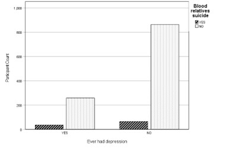

Statistics and Research Projects
A/B Test in R Using Lamps Marketing Data
13 March, 2023
In this project I was tasked with running an experiment to test a new home decor marketing strategy and its effects on customers. The stakeholder needed to know whether their new notification campaign would increase sales without increasing uninstalls, the latter of which would lead to customer loss. I calculated sample size, explored the data, performed data checks and conducted a final analysis using cross-tabulations, tests of significance, tests of effect size, and t-tests. The conclusion was interesting! It goes to show you how important it is that business decisions are data-driven. .
Applied Data Analysis using Survey Data
11 December, 2021
 Content warning: this paper discusses death by suicide, family suicide, and survivor trauma In this project, I used real-world data to design a statistical study of survey data from the MIDUS 2 (Mid-life in the US-2) survey I calculated descriptive statistics for demographics, cleaned and organised data for analysis, and conducted a variety of statistical tests: MANOVA, independent samples t-test, and Chi square analysis. I then reported non-significant results and offered possible explanations and future recommendations for study on the topic.
Behavioural Intervention
8 December, 2021
As part of the MSc in Psychological Science, I designed a social influence behavioural intervention as part of a group project. I singlehandledly wrote the narrative for a 3,000 word paper, securing an A1 grade for the group. I later independently wrote a review of the intervention which described strengths, weaknesses, and recommendations, securing a second A1 grade for myself. I also explored principles of social influence and statistical methods appropriate to original study, including multivariate analyses of variance, best sampling practices using GPower, and tests of validity.
Commercial Research Published in Irish Times
29 July, 2022
This publication was part of the Q2 Employment Monitor report for which I gathered, analysed, and presented data. I interviewed subject matter experts, conducted a qualitative analysis of unstructured data, and analysed quantitative data which fed into a larger report which was released to news oulets. I also identified newsworthy pieces within the data. Irish Times referenced it three times, with the most references in the below article. The Irish Independent, Business Plus Magazine, the Dundalk Argus, the Fingal Independent, the Drogheda Independent, and the Mid-Louth Independent also picked up the story.
Commercial Research Published in RTE News
14 October, 2022
 This publication was part of the Q3 Employment Monitor report for which I gathered, analysed, and presented data. I interviewed subject matter experts, conducted a qualitative analysis of unstructured data, and analysed quantitative data which fed into a larger report which was released to news oulets. The original report was 9,000 words long and reduced to a brief with bullet points for simplicity's sake. RTE, the Irish Examiner, Silicon Republic, and theCork.ie all picked up the data story.
This publication was part of the Q3 Employment Monitor report for which I gathered, analysed, and presented data. I interviewed subject matter experts, conducted a qualitative analysis of unstructured data, and analysed quantitative data which fed into a larger report which was released to news oulets. The original report was 9,000 words long and reduced to a brief with bullet points for simplicity's sake. RTE, the Irish Examiner, Silicon Republic, and theCork.ie all picked up the data story.
LinkedIn Personnel Research Contract: Entrepreneur Club Presidents
29 July, 2022
In this assignment from an UpWork client, I was tasked with finding the current and/or former presidents of entreprenuership clubs at the top 20 business schools in the United States. I clarified the criteria and began scouring the web for resources pointing to who these individuals might be, confirming their roles and identities on LinkedIn. I delivered a bespoke lead generation spreadsheet filled with 35% more contacts than requested. The client said I exceeded expectations and gave me a 5-star review on UpWork.
- Design: HTML5 UP